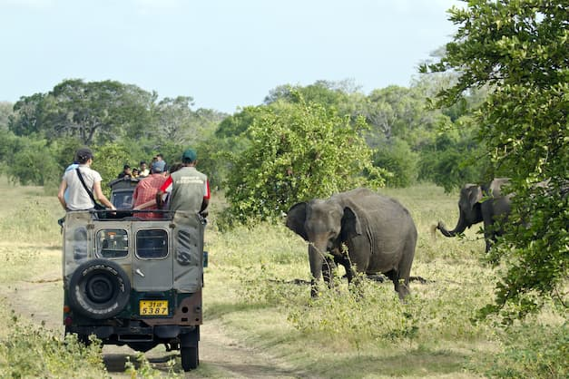
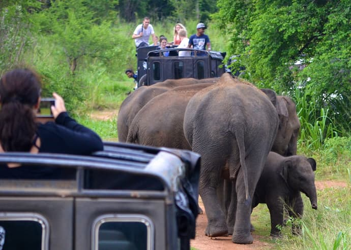

Welcome to Sri Lankan Wildlife
Immerse yourself in the breathtaking biodiversity of Sri Lanka, where diverse ecosystems play host to a myriad of unique and exotic wildlife. From majestic elephants to elusive leopards and vibrant peacocks, our island is a paradise for nature lovers and conservation enthusiasts alike.
Explore the lush national parks, embark on wildlife safaris, and learn about ongoing conservation efforts to protect and preserve the rich natural heritage of Sri Lanka.
Join us in our mission to celebrate, protect, and sustain the incredible wildlife that makes Sri Lanka truly special. Get ready for an unforgettable journey into the heart of nature!
You can watch animals and visit to beautiful places
Embarking on a journey into the heart of nature offers a captivating experience where the convergence of wildlife and stunning landscapes creates a tapestry of natural wonders. One remarkable aspect of this adventure is the opportunity to watch animals in their natural habitats. The thrill of observing majestic elephants, elusive leopards, and vibrant peacocks is unparalleled. Sri Lanka, with its lush national parks, provides a sanctuary for diverse fauna, making it a paradise for wildlife enthusiasts.
Things you must do in Sri Lanka
- Safari Adventures
- Bird Watching
- Elephant Orphanage Visit
- Explore Rainforests
- Climb Sigirya Rock
- Visit Udawalawe Transit index
- Attend Wildlife Conservation Programs
Safari Adventures
Take a safari in one of Sri Lanka's national parks, such as
- Yala National Park
- Wilpattu National Park
- Udawalawe park
These parks are index to diverse wildlife, including elephants, leopards, sloth bears, and a myriad of bird species.
Remember to respect the wildlife and adhere to park regulations to ensure a positive and sustainable safari experience. Each of these parks contributes uniquely to Sri Lanka's reputation as a wildlife lover's paradise
Bird Watching
Explore the country's bird sanctuaries like Sinharaja Forest Reserve or Bundala National Park. Sri Lanka boasts an array of colorful bird species, making it a paradise for birdwatchers.
.jpg)
Deer in Sri Lanka play a crucial role in maintaining the ecological balance of different ecosystems. They are not only a delight for wildlife enthusiasts and photographers but also contribute to the overall biodiversity of the island. Visitors to national parks and wildlife reserves have the opportunity to observe these graceful creatures in their natural habitats, adding to the charm of Sri Lanka's wildlife experience.
The Sri Lankan peacock is a common name for the Indian peafowl (Pavo cristatus), a bird species native to the Indian subcontinent, including Sri Lanka. The male peacock is known for its colorful and elaborate train of feathers, which it displays to attract the female peahen. The peacock is also a symbol of Hindu mythology, and the national bird of India.
Join us in our mission to celebrate, protect, and sustain the incredible wildlife that makes Sri Lanka truly special. Get ready for an unforgettable journey into the heart of nature!
Why Sri Lankan Wildlife is Special
Sri Lankan wildlife stands out for its exceptional features and vibrant ecosystems. Here's why it's truly special:
- Majestic Sri Lankan Elephants
- Elusive Leopards in Lush Jungles
- Diverse Flora and Fauna
- Harmonious Coexistence of Ecosystems
- Colorful Birdlife, including the Iconic Peacock
The island's commitment to conservation and successful efforts to protect endangered species make it a global conservation leader. Explore the wonders of Sri Lankan wildlife and join us in celebrating its unique biodiversity!
About
Sri Lanka, a teardrop-shaped island nestled in the Indian Ocean, boasts a remarkable tapestry of biodiversity that captivates the hearts of nature enthusiasts worldwide. The island's wildlife, a harmonious blend of unique species and ecosystems, paints a vivid portrait of nature's wonders.
One of Sri Lanka's iconic inhabitants is the majestic Sri Lankan elephant (Elephas maximus maximus). Roaming freely in national parks like Udawalawe and Minneriya, these gentle giants symbolize the country's commitment to wildlife conservation. Sri Lanka holds one of the largest wild elephant populations in Asia, providing a haven for these endangered creatures.